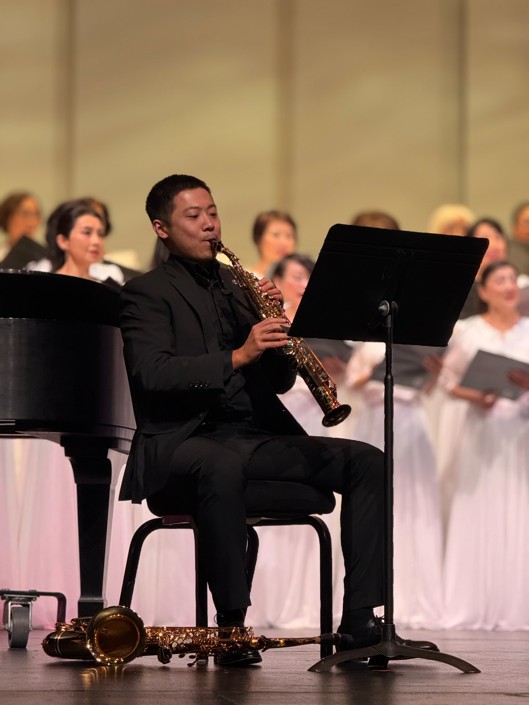
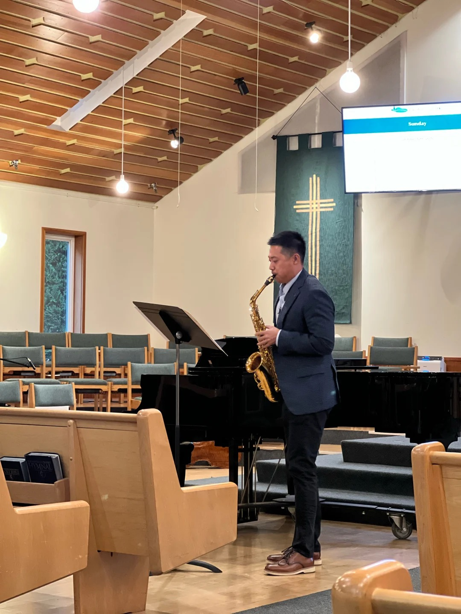
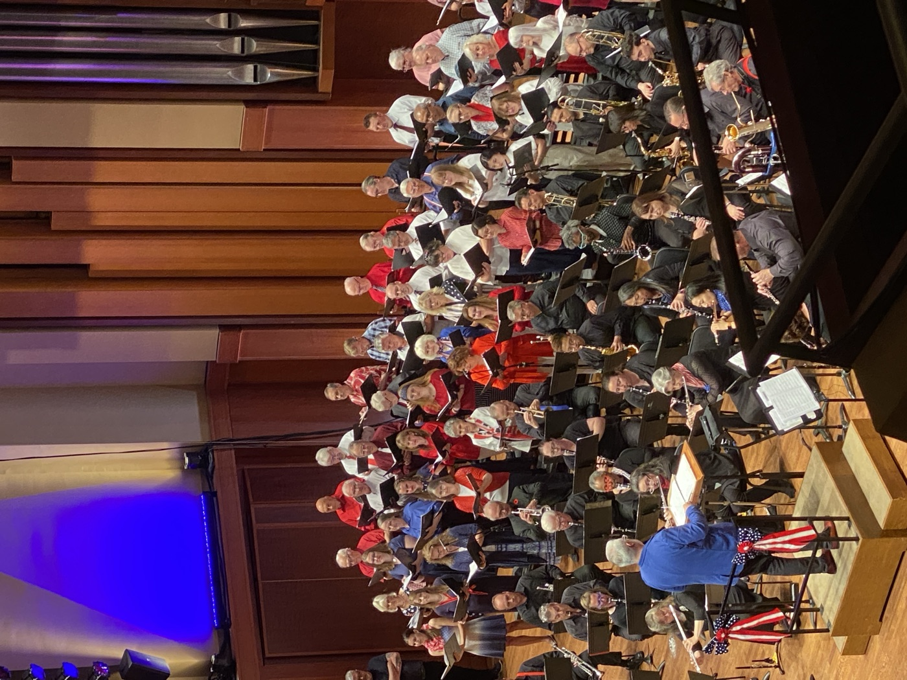

Award-Winning Saxophonist, Educator & Music Arranger 屡获殊荣的萨克斯演奏家、教育家与编曲人
Chen Wang Sax Studio 王晨萨克斯工作室
Blending classical and contemporary music across concert stages worldwide. 融合古典与当代音乐，足迹遍布世界各地的音乐舞台。



About关于
Chen Wang, hailing from Beijing, China, is celebrated for his evocative integration of classical and contemporary music. His performances have enchanted audiences throughout Europe and China, showcasing his broad artistic range and profound musicality. Chen has held principal roles in several prestigious ensembles, including the Seattle Wind Symphony, Patterns Saxophone Ensemble, and the University of Washington Wind Ensemble, and co-founded the CNU Alumni Wind Orchestra.
王晨来自中国北京，以其对古典与当代音乐的深情演绎而闻名。他的演出足迹遍布欧洲与中国，充分展现了他宽广的艺术视野与深厚的音乐造诣。 王晨曾在多个知名乐团担任首席，包括 西雅图管乐交响乐团、 Patterns萨克斯管重奏团，以及 华盛顿大学管乐团， 并共同创立了首都师范大学校友管乐团。
Internationally recognized, Chen has garnered numerous awards in band ensemble, solo, and chamber music competitions — including first place at the Ostrava Wind Music Competition in the Czech Republic and at the 3rd Beijing International Wind Music Festival. He also won the professional performer category at the American Protégé Music Competition, earning an invitation to perform at Carnegie Hall, and received the Top Honor Award at My Music Festival in Germany.
王晨在国际乐坛屡获认可，曾在管乐重奏、独奏及室内乐比赛中斩获众多奖项——包括捷克奥斯特拉发管乐音乐比赛第一名， 以及第三届北京国际管乐节金奖第一名。他还在美国新秀音乐比赛专业演奏家组荣获第一名，并因此获邀在卡内基音乐厅演出， 此外还在德国My Music Festival上获得最高荣誉奖。
In addition to performing, Chen is a dedicated educator, teaching saxophone performance, chamber music, and music theory at Capital Normal University, where his students have consistently succeeded in local competitions. His research on the educational functions of wind bands has also won top honors in The Chinese Society of Education Research paper competitions.
除演奏事业外，王晨也是一位尽职的教育工作者，在首都师范大学教授萨克斯管演奏、室内乐及乐理课程，其学生屡次在地方比赛中 取得优异成绩。他关于管乐队教育功能的研究论文，也曾在中国教育学会的论文评选中荣获最高奖项。
Chen is currently pursuing a Doctor of Musical Arts at the University of Washington. In 2008, he volunteered music therapy and saxophone lessons for children affected by the Wenchuan earthquake.
王晨目前正在华盛顿大学攻读音乐艺术博士学位（D.M.A.）。2008年，他曾志愿为汶川地震灾区的儿童提供音乐治疗与萨克斯管教学。
- Capital Normal University — B.M. in Music 首都师范大学 — 音乐学学士（B.M.）
- Capital Normal University — B.S. in Geology 首都师范大学 — 地质学学士（B.S.）
- Capital Normal University — M.Ed. in Music Education 首都师范大学 — 音乐教育硕士（M.Ed.）
- University of Washington — M.M. in Saxophone Performance 华盛顿大学 — 萨克斯管演奏硕士（M.M.）
- University of Washington — D.M.A. in Saxophone Performance (Candidate) 华盛顿大学 — 萨克斯管演奏艺术博士（D.M.A.）
🏆 Judging Experience 🏆 评委经历
- WMEA All-State Judge WMEA All-State 评委
- Washington State Solo & Ensemble — Saxophone Judge Washington State Solo & Ensemble 萨克斯管评委
- Seattle World Harmonies International Music Competition — Wind Division Judge Seattle World Harmonies International Music Competition Wind Division 评委
- Chinese-American saxophone judge on the Washington State All-State judging panel 华盛顿州 All-State 评审中的华人萨克斯管评委
- 2025–26 World Harmonies Wind Division judge, alongside Arizona State University flute professor Elizabeth Buck 2025–26 World Harmonies Wind Division 与 Arizona State University 长笛教授 Elizabeth Buck 共同担任评委
All-State is an official program of the Washington State Board of Education. All-State 是华盛顿州教育委员会官方的活动。
Awards & Honors获奖荣誉
Recent Arrangement近期改编
A music arranger is a creative professional who adapts existing music compositions for different uses, such as live performances or studio recordings. Chen Wang is particularly skilled in arranging for wind ensembles and saxophone ensembles, and his works have been performed both domestically and internationally.
编曲人是一种富有创造力的职业，负责将现有音乐作品加以改编，以适应现场演出或录音室制作等不同用途。王晨尤其擅长为 管乐团与萨克斯管重奏团编曲，其作品已在国内外多次上演。
The Planets, Op. 32
Recordings录音作品
Selected live performances, available on SoundCloud. 精选现场录音，可在SoundCloud收听。
Chinese Rhapsody No. 3 中国狂想曲第三号
Composed by An-lun Huang in 1988, this piece is a significant work in the saxophone repertoire. Written in Toronto and dedicated to Canadian saxophonist Paul Brodie, it draws on the "Saibei Folk Style" across five continuous movements for alto and soprano saxophone. Live recording by Dr. Yunze Mu at the University of Washington School of Music.
此曲由黄安伦于1988年创作，是萨克斯管曲目中的重要作品。该作品写于多伦多，题献给加拿大萨克斯管演奏家保罗·布罗迪， 全曲由中音与高音萨克斯管演奏的五个连续乐章组成，融入了"塞北民歌风格"的音乐元素。现场录音由穆韵泽教授于 华盛顿大学音乐学院录制。
Vocalise 无词歌（Vocalise）
Rachmaninoff's Vocalise, Op. 34 No. 14, is sung on a single vowel rather than words, letting the melody carry its emotion unaided. Live recording by Dr. Yunze Mu at the University of Washington School of Music.
拉赫玛尼诺夫的《无词歌》，作品34之14，全曲仅以单一元音演唱，不使用歌词，让旋律独自承载情感的表达。 现场录音由穆韵泽教授于华盛顿大学音乐学院录制。
Concerto for Alto Saxophone and Orchestra 中音萨克斯管协奏曲
Composed in 1949, Tomasi's concerto is a cornerstone of the saxophone repertoire, blending traditional French style with modernist color. Live recording made at home with Dr. Tong Liu during the 2020 COVID period.
此协奏曲创作于1949年，是萨克斯管曲目中的基石之作，融合了传统法国音乐风格与现代主义色彩。这是2020年新冠疫情 期间，与刘桐博士在家中录制的现场版本。
Sonata for Alto Saxophone and Piano 中音萨克斯管与钢琴奏鸣曲
Pierre-Max Dubois (1930–1995) was a French composer whose works are staples of the modern saxophone repertoire. Recorded at home with Dr. Harriet Wong.
皮埃尔-马克斯·杜布瓦（1930–1995）是一位法国作曲家，其作品是现代萨克斯管曲目中的常备曲目。此录音与 Harriet Wong博士在家中录制完成。
Studio Policy工作室政策
Chen Wang Sax Studio offers one complimentary 30-minute trial lesson, followed by recurring 45-minute private lessons billed in prepaid four-lesson cycles ($100 per lesson, cash only). Cancellations require at least 24 hours' notice by email; lessons cancelled with less notice (other than same-day illness) are treated as used and are non-refundable. The full policy also covers refunds, studio holidays, parent–teacher communication, and supervision for minor students.
王晨萨克斯工作室为新生提供一次30分钟的免费试听课，随后的常规课程为每次45分钟，按四节课为一个 周期预先收费（每节课100美元，仅收现金）。如需取消或改期，须至少提前24小时通过邮件通知；除当天 生病外，未提前24小时通知的取消将视为已上课，不予退款。完整政策还包括退款规定、工作室假期、 家长与教师沟通方式，以及未成年学生的看护安排等内容。
View Entire Policy 查看完整政策Frequently Asked Questions常见问题
Does Chen Wang Sax Studio offer a free trial lesson? 王晨萨克斯工作室是否提供免费试听课？
Yes. New students receive one complimentary 30-minute trial lesson before starting regular 45-minute private lessons.
是的。新生可享受一次30分钟的免费试听课，随后开始常规的45分钟私教课程。
Where are lessons held? 课程在哪里进行？
Lessons are taught in person in the Bothell, WA area. Students from across the Pacific Northwest are welcome.
课程在美国华盛顿州博塞尔（Bothell）地区面授进行，欢迎太平洋西北地区（PNW）的学生前来学习。
How much do saxophone lessons cost? 萨克斯管课程收费如何？
Private lessons are $100 per 45-minute session, billed in prepaid four-lesson cycles (cash only).
私教课程每节45分钟，收费100美元，按四节课为一个周期预先收取（仅收现金）。
What is the cancellation policy? 取消课程的政策是什么？
Cancellations or reschedules require at least 24 hours' notice by email. Lessons cancelled with less notice (other than same-day illness) are treated as used and non-refundable. See the full Studio Policy.
取消或改期须至少提前24小时通过邮件通知。除当天生病外，未提前24小时通知的取消将视为已上课，不予退款。 查看完整工作室政策。
What ages and skill levels does Chen Wang teach? 王晨教授哪些年龄段和水平的学生？
Students of all ages and skill levels are welcome, from complete beginners to advanced players preparing for auditions and competitions.
欢迎各年龄段、各水平的学生，从零基础初学者到备战考试与比赛的高水平演奏者均可。
What are Chen Wang's qualifications? 王晨的专业资历如何？
Chen Wang is a Doctor of Musical Arts candidate at the University of Washington, holds a Master of Music in Saxophone Performance (UW) and a Master of Education in Music Education (Capital Normal University), and has held principal chair positions in the Seattle Wind Symphony and University of Washington Wind Ensemble.
王晨目前是华盛顿大学音乐艺术博士（D.M.A.）在读生，持有华盛顿大学萨克斯管演奏硕士学位及首都师范大学音乐教育 硕士学位，并曾在西雅图管乐交响乐团及华盛顿大学管乐团担任首席。
Does Chen Wang judge music competitions? 王晨是否担任音乐比赛评委？
Yes. Chen serves as a judge for the WMEA All-State auditions, Washington State Solo & Ensemble, and the Seattle World Harmonies International Music Competition.
是的，王晨担任WMEA All-State评委、Washington State Solo & Ensemble评委，以及Seattle World Harmonies International Music Competition评委。
What Students Say学生评价
"Took lessons with Chen and he's really great. I had no experience with saxophone at all when I started, and he was super patient with me. Didn't feel like he was rushed or frustrated even though I was definitely slow to pick things up lol. He explains things in a way that actually makes sense and is really encouraging. You can tell he knows what he's doing—been playing forever and it shows. He adjusts the lessons to where you're at, not just pushing through some generic curriculum. Would definitely recommend if you're thinking about learning sax."
"跟王晨老师上课的体验非常好。我开始学的时候完全没有萨克斯管基础，他非常有耐心。即使我学得比较慢，也完全感觉不到他着急或不耐烦（笑）。他讲解方式很清楚，也很有条理，还特别鼓励人。能看出他真的很专业——吹了很多年，功底很扎实。他会根据你的实际水平调整课程内容，而不是死板地套用一套通用教材。如果你在考虑学萨克斯，真心推荐他。"
Schedule a Trial Lesson 预约试听课
Interested in booking a performance or starting saxophone lessons? Submit a request below and Chen will get back to you soon.
有意预约演出或开始学习萨克斯管课程？请在下方提交申请，王晨将尽快与您联系。
- Email:邮箱： Chenwangsax@gmail.com